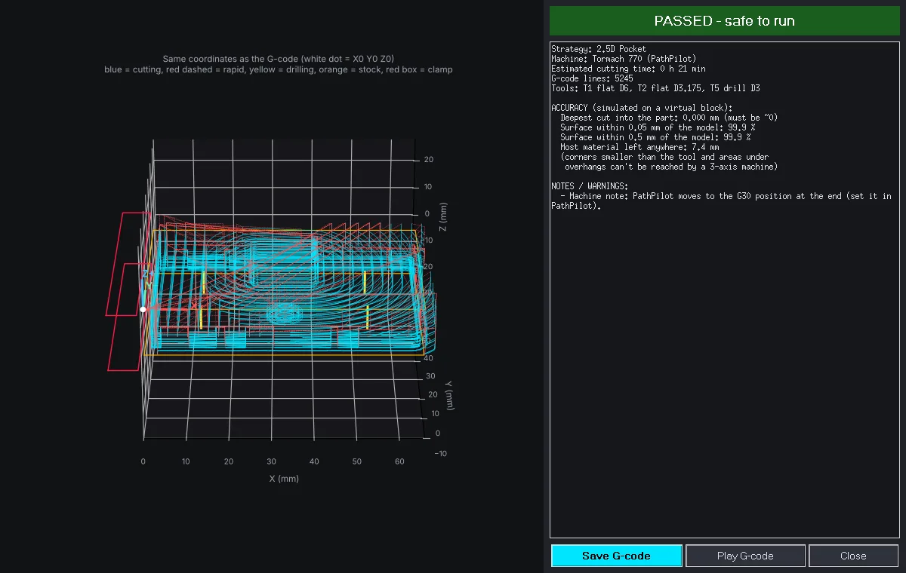
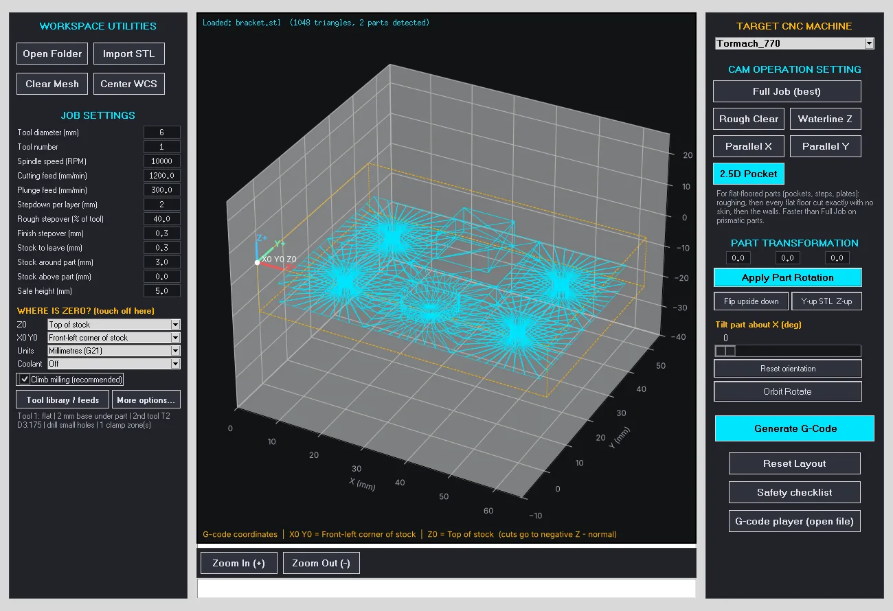
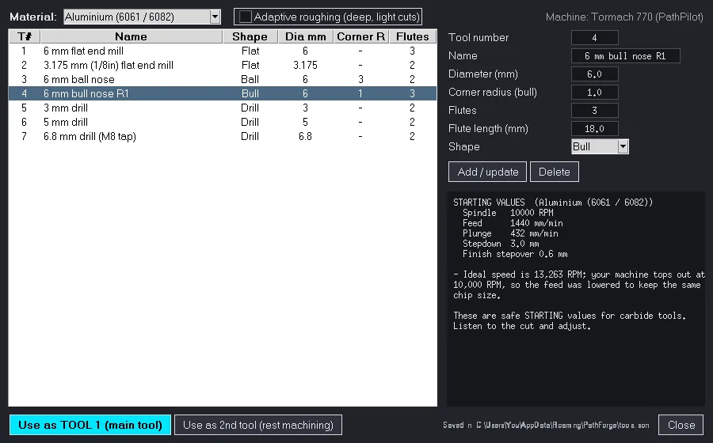
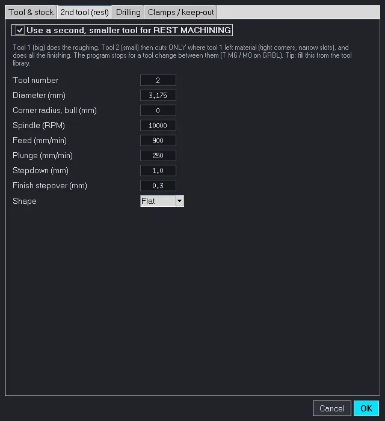
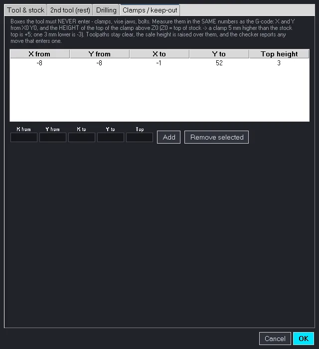
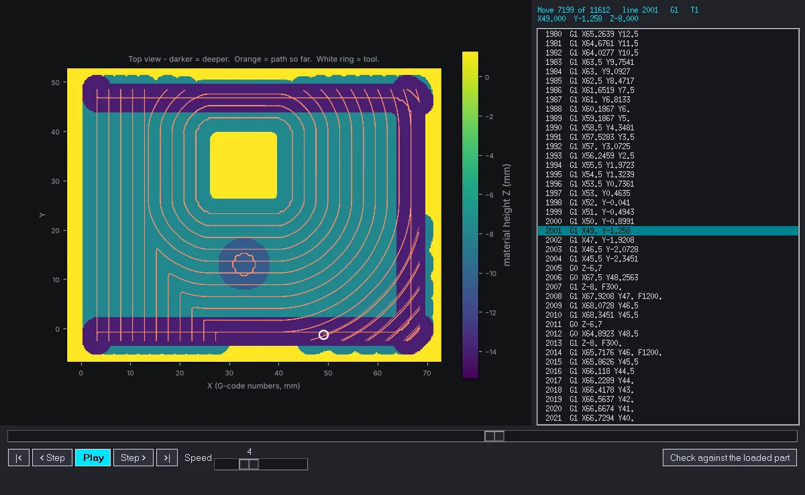

Home / Features
Everything PathForge CAM does
From STL to checked G-code for 3-axis mills and routers. Version 4.6 adds nine upgrades, marked NEW.
Safety check
Every program is cut on a virtual block first
After making the G-code, PathForge reads the finished file exactly like your controller will and cuts it on a block made of 0.1 mm squares. You can only save normally when it says PASSED.
- Gouges: any cut into the part, to the thousandth of a millimetre
- Rapid crashes: G0 moves through stock that is still there
- Too deep: moves below the part, into the vise or table
- Overloads: the tool buried deep and wide, the cut that snaps end mills
- Clamp zones: any move into a clamp or vise jaw you marked
- Models the real tool shape for every tool, every arc and every drilling cycle

Toolpaths
Strategies for real parts
Choose one button. PathForge makes every pass, top down, layer by layer, in the same coordinates your machine uses.
- Full Job: rough, finish the walls exactly (waterline), then the tops and floors
- 2.5D Pocket: plates, pockets and steps, with every flat floor cut exactly
- Adaptive roughing: light stepover, deep stepdown, even tool load
- Rough Clear, Waterline Z, Parallel X / Y on their own

Tool library
Your tools, with feeds and speeds NEW
Save your end mills and drills once. Pick a material and PathForge suggests starting values, then fills them into the job with one click.
- Aluminium, mild steel, stainless, brass, plastics, hardwood and MDF
- Spindle speed and feed kept inside your machine's limits, with a note when they are lowered
- Adaptive mode suggests a deeper stepdown with a light stepover
- Saved on your own computer, nothing online

Cutters
Flat, ball-nose and bull-nose end mills NEW
The drop-cutter maths for round tools is exact and was tested against brute force on thousands of points: never too low. The checker uses the same real shapes, so a gouge from a round tool is caught too.
- Ball-nose for smooth curved surfaces
- Bull-nose (corner radius) for strong cutting with a fine finish on slopes
Two tools
Rest machining with a second tool NEW
Tool 1, a big end mill, removes most of the material fast. PathForge then works out exactly where material is still left, in tight corners and narrow slots, and tool 2 cuts only there before doing all the finishing.
- Tool change written for your control (T M6, or a stop and a message on GRBL)
- Every travel move of tool 2 stays above the material tool 1 left
- Checked as one program, with the right size for each tool

Drilling
Holes found and drilled for you NEW
Round holes smaller than your end mill are found in the model and drilled with the drill of the same size from your library. Bigger holes are milled by the normal toolpaths.
- G81 for shallow holes, G83 peck drilling for deep ones
- Through holes go into the stock below the part, never past it
- Drilling runs last, after all milling
(TOOL 5 DRILL D3.000MM) T5 M6 S2500 M3 G0 G43 H5 Z5. (deep hole: G83 peck drilling, 3 mm pecks) G98 G83 X5.5 Y5.5 Z-9.4 R1. Q3. F150. X57.5 X5.5 Y25.5 X57.5 G80
Clamps
Keep-out zones for clamps and vise jaws NEW
Type where your clamps are, in the same numbers as the G-code. Toolpaths stay clear with an air gap, the safe height rises over them, the preview draws them in red, and the checker reports any move that enters one.

G-code player
Watch the program before the machine does NEW
Play any G-code, from PathForge or any other CAM, and watch material disappear line by line. Step forward and back, jump with the slider, and run the safety check on any file.

Machines
G-code for your control
Each control gets its own safe start, tool change, arcs, drilling cycles and end sequence, with its spindle speed and feed limits. Millimetres or inches.
| Tormach 770 | PathPilot. T M6 with G43 H, G81/G83, G2/G3 |
|---|---|
| Haas VF-2 | NGC control. T M6 with G43 H, G81/G83, G2/G3 |
| GRBL 1.1 | Routers and hobby mills. Stop + message for tool changes, drilling written out |
| Mach3 / Mach4 | Mills and routers. T M6 with G43 H, G81/G83, G2/G3 |